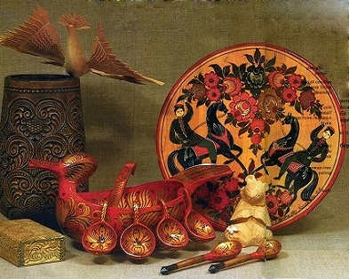

Виды изобразительного искусства
Изобразительное искусство как род человеческой деятельности подразделяется по способам формообразования на различные виды. Каждый из видов обладает определенным арсеналом выразительных средств. Наиболее известные виды изображительного искусства:
- Архитектура
- Живопись
- Графика
- Скульптура
- Декоративно-прикладное искусство
Архитектура
Это искусство проектировать и строить здания
и сооружения, создающие пространственную
среду для жизни и деятельности человека.

Перейти к разделу "Архитектура"
Живопись
Живопись – это вид изобразительного искусства,
произведения которого создаются с помощью красок
(темпера, масляные краски, акрил, гуашь).
Перейти к разделу "Живопись"
Графика
Графика – это вид изобразительного искусства,
включающий рисунок и печатные изображения. Рисунки
выполняются карандашом, тушью, сепией, сангиной.
Перейти к разделу "Графика"
Скульптура
Скульптура – один из самых древних видов искусства.
Первые скульптурные произведения являлись идолами,
оберегами, изображали древних богов. Различаются круглая
скульптура (осматриваемая с разных сторон) и рельеф
(высокий, средний, низкий, контррельеф).
Перейти к разделу "Скульптура"
Декоративно-прикладное искусство
Область декоративного искусства: создание художественных
изделий, имеющих практическое назначение в быту и отличающееся
декоративной однообразностью. Предметы должны быть не только
удобны, но должны приносить человеку эстетическое наслаждение.

Перейти к разделу "Декоративно-прикладное искусство"